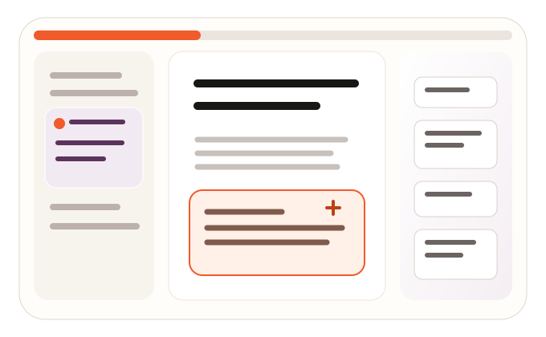

IELTS
Cobalt for evidence, test structure and course wayfinding.
Selected direction · Surface validation
Porcelain Atlas is tested here as a public promise, a focused lesson, a governed authoring instrument, and a serious assessment environment. These are browser-viewable design studies only.
Visually approved · 4 October 2026
The student lesson preserves the approved V3 source and artwork. The landing has an original hero and tighter editorial composition. Compare with approved V3. Prototype controls change presentation only and never store data.
An editorial institutional promise with programme evidence, audience pathways, and a Porcelain Atlas hero—never a dashboard or invented proof wall.
02A continuous IELTS Preparation (B2) learning page with clear wayfinding, teaching rhythm, media, resources, and accessible practice patterns.
03A dense, calm content-governance workspace: hierarchy, canvas, inspector, locked core content, previews, validation and deliberate publishing.
04A restrained split-view Reading assessment demonstrating response models, supportive feedback, review, manual marking and Exam mode.
Separate modality specimen: Listening interaction specimen demonstrates instructions, an illustrative audio state, Listening questions and range annotations. It is not part of the Reading test.
Shared token system
Warm neutrals carry reading and governance. Vivid orange identifies the brand; darker orange carries accessible white-text actions. Course colour guides context rather than recolouring the interface.
#F15A2A#BD4013#FFF0E8#F7F4EE#FFFEFD#171714#5A345C#3158C7#157347#B42318#855600#40566FCourse-theme contract
Course colour affects monograms, route lines, illustration and contextual badges. Actions, semantic states, typography and geometry remain part of the master brand.
Cobalt for evidence, test structure and course wayfinding.
Mint-green for everyday communication and progression.
Deep red for qualification context and academic rigour.
Navy for academic conventions, evidence and research.
Vector, glass and motion specimen
Original vectors explain systems. Glass is reserved for wayfinding and temporary tools. Reading and dense forms stay opaque.
Shared geometric strokes connect course routes, language skills, block composition, assessment evidence, feedback and progress.


Level 2 breadcrumb and control surfaces use translucency, a fine light edge, warm ambient shadow, and a solid fallback.
Level 0 reading canvas, level 1 selected content, level 2 floating controls, level 3 dialogs and temporary sheets.

Motion: 130–220 ms control feedback, 260 ms disclosure, 320–420 ms sheets and surface entrances. There is no continuous movement, shaking, or motion behind reading text. Reduced motion becomes an instant state change.
Phase 0B acceptance checklist
Known prototype limitations
Controls demonstrate visual and interaction states only. Media is representative, timers do not run, responses are not scored, answer keys are not embedded, save/publish actions do not persist, and browser-only review does not replace production assistive-technology, security, content-rights or performance validation.